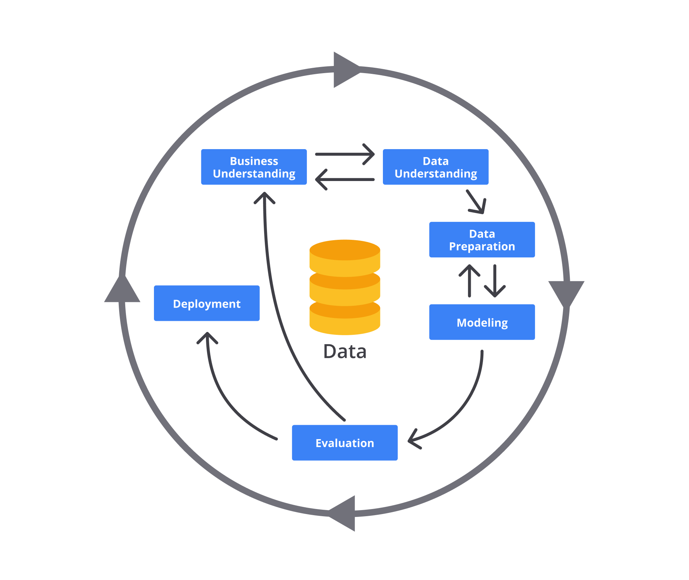

iPAS AI應用規劃師 初級
L11202 資料整理與分析流程
出題方向 (L11202 資料整理與分析流程)
1
資料收集與整合
2
資料清理
3
資料轉換
4
資料探索分析 (EDA)
5
特徵工程基礎
6
資料視覺化
7
分析流程與工具
8
結果解釋與報告
#1
★★★★★
典型的資料分析流程 (Data Analysis Workflow) 通常包含哪些主要步驟？
答案解析
一個完整的資料分析流程通常始於明確定義要解決的問題或目標，接著進行資料收集、資料清理（處理缺失值、錯誤值、異常值等）、資料探索分析（了解資料特性、發現模式）、可能需要建立預測或分類模型，最後將分析結果以視覺化或報告形式呈現並加以解釋。這個流程是迭代的，可能需要反覆進行某些步驟。
#2
★★★★★
在資料清理 (Data Cleaning / Data Cleansing) 階段，處理缺失值 (Missing Values) 的常見方法不包括下列何者？
答案解析
處理缺失值 (Missing Values) 的常用策略包括刪除含有缺失值的數據（行或列，但可能損失資訊）、數值插補（用平均值、中位數等替代）、類別插補（用眾數替代）、或更複雜的模型預測插補。將缺失值直接當作新類別通常不適用於數值型數據，且可能扭曲分析結果，除非有特殊理由（例如缺失本身代表某種意義），一般不建議直接忽略。
#3
★★★★
在資料集中發現一個客戶年齡為 200 歲，這很可能是一個什麼問題？應如何處理？
答案解析
200 歲顯然超出了人類正常的年齡範圍，極可能是數據輸入錯誤或其他原因造成的異常值 (Outlier) 或錯誤值 (Erroneous Value)。資料清理 (Data Cleaning) 的步驟應包含識別這類值，調查其產生原因（是輸入錯誤還是特殊標記？），然後根據情況決定是修正（如果能找到正確值）、刪除該筆記錄，或是用插補 (Imputation) 方法處理。
#4
★★★★
將數值型特徵（如收入）的範圍縮放到 [0, 1] 或 [-1, 1] 之間的過程，稱為什麼？
答案解析
特徵縮放 (Feature Scaling) 是資料轉換 (Data Transformation) 的一種常見技術，目的是將不同範圍的數值特徵調整到相似的尺度，以避免某些特徵因數值範圍過大而主導了機器學習模型的訓練過程。常見的方法包括最小-最大縮放 (Min-Max Scaling)（將數據縮放到 [0, 1] 或指定範圍）和標準化 (Standardization)（將數據轉換為平均值為 0，標準差為 1）。正規化 (Normalization) 有時特指最小-最大縮放。
#5
★★★★
將類別型特徵（如「顏色」：紅、綠、藍）轉換為機器學習模型可以處理的數值表示（如 [1,0,0], [0,1,0], [0,0,1]），這個過程稱為？
答案解析
特徵編碼 (Feature Encoding) 是將類別型數據轉換為數值型數據的過程，因為大多數機器學習演算法無法直接處理文字類別。常見的編碼方法包括獨熱編碼 (One-Hot Encoding)（如題目範例所示，為每個類別創建一個新的二元特徵）和標籤編碼 (Label Encoding)（為每個類別分配一個唯一的整數）。特徵離散化是將連續數值轉換為類別區間。
#6
★★★★★
探索性資料分析 (EDA, Exploratory Data Analysis) 的主要目的是什麼？
答案解析
探索性資料分析 (EDA) 是在進行正式建模或假設檢定之前，對數據進行初步調查的過程。其目的包括：熟悉數據集、發現數據中的異常或錯誤、了解變數的分佈情況、探索變數之間的關係、識別潛在的模式或趨勢、以及為後續的特徵工程 (Feature Engineering) 和模型選擇提供依據。常用的方法包括計算描述性統計 (Descriptive Statistics) 和繪製資料視覺化 (Data Visualization) 圖表。
#7
★★★★
在 EDA 中，計算一組數據的平均值 (Mean)、中位數 (Median) 和標準差 (Standard Deviation)，屬於哪種分析方法？
答案解析
描述性統計 (Descriptive Statistics) 是用來總結和描述數據集基本特徵的方法。它包括計算集中趨勢 (Central Tendency) 的量度（如平均值、中位數、眾數）和離散程度 (Dispersion) 的量度（如範圍、變異數、標準差）。這是 EDA 中常用的初步分析手段。推論性統計則是用樣本推論母體，預測性建模是建立模型預測未來，假設檢定是驗證關於母體的假設。
#8
★★★★
哪種類型的圖表最適合用來呈現單一類別變數 (Categorical Variable) 中各個類別的頻率分佈 (Frequency Distribution)？
答案解析
長條圖 (Bar Chart) 使用長條的高度或長度來表示不同類別的數值（通常是頻率或計數），非常適合比較各類別的數量。圓餅圖 (Pie Chart) 則是用扇形面積表示各類別佔整體的比例。散佈圖用於觀察兩個數值變數的關係，折線圖常用於顯示時間趨勢，盒鬚圖用於呈現數值變數的分佈和異常值。

#9
★★★★
想要觀察兩個數值變數 (Numerical Variables) 之間是否存在相關性 (Correlation)，應該優先選擇哪種圖表？
答案解析
散佈圖 (Scatter Plot) 是將兩個數值變數的值分別對應到 X 軸和 Y 軸，以點的形式繪製出來。透過觀察點的分佈模式（例如是否呈現線性、曲線或聚集），可以直觀地判斷兩個變數之間是否存在關係以及關係的強度和方向。直方圖用於顯示單一數值變數的分佈。

#10
★★★
下列哪項是資料清理 (Data Cleaning) 的主要目標？
答案解析
資料清理 (Data Cleaning)，又稱數據清洗 (Data Scrubbing)，是識別和修正（或移除）數據集中不準確、不完整、不相關、重複或格式錯誤的數據的過程。其最終目標是確保數據的品質，使其適用於後續的分析或建模，從而得到更可靠的結果。
#11
★★★★
將來自多個不同來源（例如不同部門的資料庫、外部API）的數據合併在一起進行分析，這個過程稱為？
答案解析
資料整合 (Data Integration) 是將來自不同來源、不同格式的數據合併、轉換並呈現為統一視圖的過程。這是資料分析流程中的重要步驟，尤其是在處理來自多個系統的數據時，目的是為了能夠進行更全面、更深入的分析。
#12
★★★★
從原始數據中創建新的、更能有效代表潛在模式的輸入變數（特徵）以供機器學習模型使用的過程，稱為？
答案解析
特徵工程 (Feature Engineering) 是利用領域知識和數據分析技術，從原始數據中提取或組合出對模型預測更有幫助的特徵的過程。好的特徵工程可以顯著提升模型的性能。它可能包括創建交互項、多項式特徵、基於時間的特徵等。
#13
★★★
將客戶的「購買日期」和「出生日期」兩個欄位，計算出客戶購買時的「年齡」，這屬於特徵工程 (Feature Engineering) 中的哪種操作？
答案解析
特徵創建 (Feature Creation) 是從現有特徵中組合或計算出新的特徵。在這個例子中，「購買時年齡」是透過「購買日期」和「出生日期」計算得出的新特徵，目的是為了讓模型能更好地利用年齡資訊。特徵選擇是從現有特徵中挑選子集，特徵提取是將高維數據轉換為低維表示（如PCA），特徵縮放是調整數值範圍。
#14
★★★
在資料分析 (Data Analysis) 中，常用來編寫程式碼進行資料處理、分析和視覺化的程式語言 (Programming Language) 主要有哪些？
答案解析
Python 和 R 是目前數據科學和資料分析領域最主流的兩大程式語言。它們都擁有豐富的函式庫（Libraries/Packages），可以方便地進行數據操作、統計分析、機器學習建模和資料視覺化。SQL 主要用於資料庫查詢，HTML/CSS/PHP 主要用於網頁開發，Java/C++ 雖也可用於數據處理，但不如 Python/R 方便。
#15
★★★
使用視覺化圖表 (Visualization Charts) 來呈現資料分析結果的主要目的是什麼？
答案解析
資料視覺化 (Data Visualization) 的主要價值在於將複雜的數據轉換成易於理解的圖形格式。人類大腦更擅長處理視覺信息，透過圖表可以快速發現隱藏在數字中的模式、趨勢、異常值和變數間的關係，從而更有效地溝通分析結果和洞察。
#16
★★★
在呈現資料分析結果時，除了圖表外，還需要包含什麼來幫助他人理解？
答案解析
有效的結果呈現 (Result Presentation) 不僅僅是展示圖表。清晰的標題和軸標籤是基礎，必要的註解可以解釋圖表中的特定點或趨勢。最重要的是，需要提供對分析結果的文字解釋，說明這些結果意味著什麼，以及它們是如何回答最初定義的問題的。同時，提及分析的限制或潛在偏差也是負責任的做法。
#17
★★★★
處理數據中存在的重複記錄 (Duplicate Records) 是屬於資料分析流程中的哪個階段？
答案解析
識別並處理重複的數據記錄是資料清理 (Data Cleaning) 的一項重要任務。重複記錄會導致統計分析結果失真（例如計數偏高）並影響模型訓練的效果。清理過程中需要定義如何識別重複項（基於哪些欄位判斷）以及如何處理（例如只保留一筆或合併資訊）。
#18
★★★
將連續的年齡數據轉換為「青年」、「中年」、「老年」等類別區間，這個過程稱為？
答案解析
特徵離散化 (Feature Discretization)，也常稱為分箱 (Binning)，是將連續的數值型特徵轉換為離散的類別型特徵的過程。透過定義一系列的切點 (Cut-off Points)，將連續值劃分到不同的區間（箱子）中。這樣做有時可以簡化模型，處理非線性關係，或滿足某些演算法對輸入數據類型的要求。

#19
★★★
在 EDA 中，觀察單一數值變數 (Numerical Variable) 的分佈形狀 (Distribution Shape)（例如是否為常態分佈），通常使用哪種圖表？
答案解析
直方圖 (Histogram) 是一種視覺化數值數據分佈的常用圖表。它將數據範圍劃分成一系列連續的區間（箱 (Bins)），然後統計落入每個區間的數據點數量，並以長條的高度表示該數量。透過觀察直方圖的形狀，可以了解數據的集中趨勢、離散程度、是否存在偏態或多峰等特徵。
#20
★★★
從多個資料來源收集數據後，通常需要進行什麼步驟來確保數據格式一致且可供合併？
答案解析
在資料整合 (Data Integration) 的過程中，由於不同來源的數據可能具有不同的格式、單位、命名慣例等，因此需要進行資料轉換 (Data Transformation)。轉換的目的是將數據標準化，使其具有一致的格式和結構，以便能夠順利地合併和進行後續分析。這可能包括單位換算、日期格式統一、欄位重命名、數據類型轉換等。
#21
★★★★
在資料清理中，如果發現數據輸入錯誤（例如，將"台北市"誤打為"台比市"），最適合的處理方式通常是？
答案解析
對於明顯的輸入錯誤或拼寫錯誤，最理想的處理方式是進行修正 (Correction)，將其更正為正確的值。這可以利用字典、規則或上下文資訊來完成。刪除記錄會損失資訊，視為新類別或用眾數取代會引入錯誤或偏差。
#22
★★★★
將原始數據（如文字）轉換成數值向量表示，以便機器學習模型處理，這屬於資料轉換 (Data Transformation) 中的哪個環節？
答案解析
特徵提取 (Feature Extraction) 是從原始數據中自動或手動地派生出數值特徵的過程。對於文字、圖像等非數值數據，需要將其轉換（向量化, Vectorization）成機器可以理解的數值形式，例如使用詞袋模型 (Bag-of-Words)、TF-IDF (Term Frequency-Inverse Document Frequency) 或詞嵌入 (Word Embeddings) 將文字轉換成向量。
在數學上，向量是一組有序的數值，例如：
[3.5, -1.2, 0.0, 4.8]。
在機器學習中，向量常用來表示資料的 特徵（Features）。每一筆資料（例如一篇文章、一張圖片、一個用戶） 都可以被轉換成一個向量，讓電腦可以「理解」並進行訓練或預測。
假設有一段文字：
AI is powerful
可以透過不同技術將文字轉成向量：
-
詞袋模型（Bag of Words, BoW）：
建立詞彙表並計算每個詞出現的次數。
例如：「AI」出現 1 次、「is」1 次、「powerful」1 次 → 向量可能為[1, 1, 1]。 -
詞頻-逆文檔頻率（TF-IDF）：
根據詞語在整體語料中的重要性給予權重，減少常見詞的影響。 -
詞向量模型（例如 Word2Vec, BERT）：
使用語意模型將每個詞轉換為多維空間中的向量（例如 300 維），再進行整合。
#23
★★★
哪種視覺化圖表適合用來顯示數據隨時間變化的趨勢 (Time Series Trend)？
答案解析
折線圖 (Line Chart) 通過連接一系列按時間順序排列的數據點來顯示趨勢。X 軸通常表示時間，Y 軸表示要觀察的數值。它非常適合用於視覺化數據隨時間的變化模式，例如股票價格、月銷售額、氣溫變化等。

#24
★★★★
在進行 EDA 時，發現某個數值特徵的分佈呈現右偏態 (Right-skewed)，這通常意味著什麼？
答案解析
右偏態 (Right-skewed)，也稱為正偏態 (Positive Skew)，表示數據分佈的尾部向右側（較大值方向）延伸。這意味著大多數數據點集中在分佈的左側（較低值），而有少數異常高的值將平均數拉高。在右偏態分佈中，通常平均值 (Mean) 會大於中位數 (Median)，中位數又會大於眾數 (Mode)。

#25
★★★
在資料分析流程中，"定義問題"階段的關鍵產出通常是什麼？
答案解析
在開始任何數據分析之前，最重要的一步是清楚地定義要解決的業務問題或研究問題。這個階段的目標是將模糊的需求轉化為具體的、可衡量的分析目標和問題，這將指導後續所有資料收集、處理和分析工作。沒有明確的問題定義，分析很容易失去方向。
#26
★★★
從一個非常大的資料集中選取一部分代表性樣本進行初步分析，這種方法稱為？
答案解析
資料抽樣 (Data Sampling) 是從母體數據中選取一個子集（樣本）的過程。在處理大數據 (Big Data) 時，由於計算資源或時間限制，可能無法對全部數據進行分析，抽樣可以讓我們用較小的成本快速獲得對數據的初步了解或進行模型測試。關鍵是要確保樣本具有代表性。
#27
★★★★
下列哪種情況最需要進行資料清理 (Data Cleaning)？
答案解析
資料清理 (Data Cleaning) 的核心目的就是處理數據中的「髒」數據，包括錯誤（拼寫錯誤、異常值）、格式不一致、重複記錄以及缺失值等問題。選項 C 描述的情況正是典型的需要進行資料清理的場景。資料量過大可能需要抽樣或使用分佈式計算，高相關性可能需要特徵選擇，類別轉換屬於特徵編碼。
#28
★★★
一個迭代式的、強調快速交付和應對變化的資料分析專案管理方法 (Data Analysis Project Management Methodology) 是？
答案解析
敏捷方法 (Agile Methodology) 強調迭代開發、增量交付、快速回應變化以及團隊協作。在資料分析和數據科學專案中，由於探索性強、需求可能不明確或易變，敏捷方法（如 CRISP-DM - 跨行業數據挖掘標準流程，或適用於軟體開發的 Scrum）通常比傳統的線性瀑布模型更適用。

#29
★★★
將資料分析的發現與洞察，有效地傳達給非技術背景的決策者，最重要的是？
答案解析
有效的溝通 (Communication) 是資料分析的最後一哩路。面對非技術背景的受眾，關鍵在於將複雜的分析結果轉化為易於理解的語言和視覺呈現。應避免過多的技術細節和術語，重點強調分析的主要發現、這些發現對業務意味著什麼，以及基於這些發現的建議行動。
#30
★★★
在建立預測模型前，從大量潛在特徵中挑選出最相關、最有預測力的特徵子集，這個過程屬於？
答案解析
特徵選擇 (Feature Selection) 的目的是從原始特徵集合中選出一個最佳的子集，以用於模型訓練。這樣做可以降低模型的複雜度、減少過度擬合的風險、縮短訓練時間，並可能提高模型的解釋性。常用的方法包括過濾法 (Filter Methods)、包裹法 (Wrapper Methods) 和嵌入法 (Embedded Methods)。